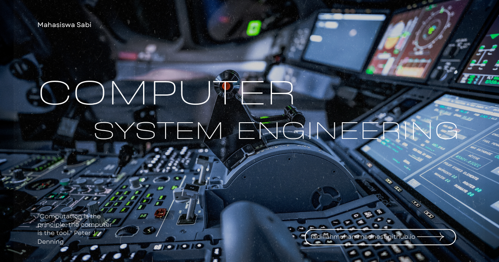

Komputasi Ubiquitous
Komputasi Ubiquitous: Mewujudkan Teknologi yang Hadir di Mana Saja dan Menyatu dengan Kehidupan Sehari-hari
Perkembangan teknologi digital telah membawa komputer keluar dari bentuk konvensional menuju perangkat yang tertanam di berbagai objek di sekitar manusia. Saat ini, komputasi tidak lagi terbatas pada komputer desktop atau laptop, tetapi hadir dalam perangkat pintar, kendaraan, rumah, kota, hingga lingkungan industri. Mata kuliah Komputasi Ubiquitous mempelajari bagaimana sistem komputasi dapat bekerja secara tersembunyi, saling terhubung, cerdas, dan selalu tersedia untuk memberikan layanan kepada pengguna kapan pun dan di mana pun.
Dalam program studi Rekayasa Sistem Komputer, Komputasi Ubiquitous merupakan mata kuliah yang mengintegrasikan berbagai bidang seperti embedded system, Internet of Things (IoT), jaringan nirkabel, cloud computing, edge computing, kecerdasan buatan (Artificial Intelligence), sensor pintar, serta interaksi manusia dan komputer. Mahasiswa mempelajari bagaimana membangun ekosistem komputasi yang mampu beradaptasi terhadap lingkungan, memahami konteks pengguna, dan memberikan layanan secara otomatis tanpa mengganggu aktivitas sehari-hari.
Apa Itu Komputasi Ubiquitous?
Komputasi Ubiquitous (Ubiquitous Computing atau Ubicomp) adalah paradigma komputasi yang memungkinkan teknologi komputer tertanam pada berbagai perangkat dan lingkungan sehingga dapat memberikan layanan secara terus-menerus, terhubung, dan hampir tidak terlihat oleh pengguna. Konsep ini pertama kali diperkenalkan oleh Mark Weiser dengan visi bahwa komputer akan menjadi bagian alami dari kehidupan manusia.
Melalui mata kuliah ini, mahasiswa mempelajari bagaimana merancang sistem komputasi yang terdiri atas berbagai perangkat pintar, sensor, aktuator, jaringan komunikasi, dan layanan berbasis cloud yang mampu bekerja secara kolaboratif untuk menyediakan layanan yang adaptif, kontekstual, dan efisien.
Ruang Lingkup Komputasi Ubiquitous
Mata kuliah ini mencakup berbagai konsep, teknologi, dan metode yang mendukung pengembangan sistem komputasi yang tersebar dan saling terhubung.
- Konsep dasar Ubiquitous Computing dan Pervasive Computing.
- Embedded System dan perangkat pintar.
- Internet of Things (IoT) dan komunikasi antarperangkat.
- Wireless Sensor Network (WSN).
- Context-Aware Computing dan pengenalan konteks pengguna.
- Mobile Computing dan perangkat bergerak.
- Cloud Computing dan Edge Computing.
- Artificial Intelligence untuk sistem adaptif.
- Human-Computer Interaction (HCI) pada lingkungan cerdas.
- Smart Home, Smart Building, Smart City, dan Smart Industry.
- Keamanan, privasi data, dan autentikasi pada sistem ubiquitous.
- Desain, implementasi, dan evaluasi sistem komputasi cerdas.
Ruang lingkup tersebut memberikan pemahaman mengenai bagaimana berbagai perangkat komputasi dapat saling berinteraksi secara otomatis untuk membangun lingkungan yang cerdas, efisien, dan responsif terhadap kebutuhan pengguna.
Peran dalam Studi Rekayasa Sistem Komputer
Dalam studi Rekayasa Sistem Komputer, Komputasi Ubiquitous berperan sebagai mata kuliah yang menghubungkan berbagai teknologi modern menjadi satu ekosistem komputasi yang terintegrasi. Mahasiswa mempelajari bagaimana perangkat keras, perangkat lunak, jaringan komputer, sensor, kecerdasan buatan, dan layanan cloud dapat bekerja secara bersamaan untuk menciptakan sistem yang mampu memberikan layanan secara otomatis.
Mata kuliah ini memperkuat kemampuan mahasiswa dalam merancang sistem yang skalabel, hemat energi, aman, dan mudah digunakan. Kompetensi tersebut menjadi sangat penting dalam pengembangan teknologi digital modern yang menuntut konektivitas tinggi, respons real-time, serta kemampuan adaptasi terhadap perubahan lingkungan.
Manfaat dalam Masyarakat, Riset, dan Dunia Kerja
Komputasi Ubiquitous memberikan manfaat yang luas karena memungkinkan teknologi hadir secara alami dalam berbagai aspek kehidupan. Penerapannya mampu meningkatkan efisiensi, kenyamanan, keamanan, dan kualitas layanan pada berbagai sektor.
- Mengembangkan Smart Home yang mampu mengotomatisasi berbagai perangkat rumah.
- Mendukung Smart City melalui sistem transportasi, energi, dan pelayanan publik yang cerdas.
- Meningkatkan efisiensi industri melalui Smart Manufacturing dan Industrial IoT.
- Mengembangkan sistem kesehatan digital dan pemantauan pasien secara real-time.
- Mendukung pertanian cerdas (Smart Agriculture) berbasis sensor dan Internet of Things.
- Mengoptimalkan manajemen energi dan bangunan pintar.
- Meningkatkan keamanan lingkungan melalui sistem monitoring otomatis.
- Mendukung penelitian pada bidang Artificial Intelligence, Edge Computing, dan Human-Computer Interaction.
- Mendorong inovasi produk digital yang lebih adaptif terhadap kebutuhan pengguna.
Lulusan yang menguasai Komputasi Ubiquitous memiliki peluang berkarier sebagai IoT Engineer, Embedded System Engineer, Smart City Engineer, Edge Computing Engineer, AI Engineer, Cloud Engineer, System Architect, Network Engineer, Smart Building Consultant, Research and Development (R&D) Engineer, maupun peneliti pada bidang komputasi cerdas dan sistem terdistribusi.
Tren Terkini dalam Komputasi Ubiquitous
Komputasi Ubiquitous terus berkembang seiring meningkatnya kemampuan perangkat pintar, jaringan komunikasi, dan kecerdasan buatan. Penelitian modern berfokus pada pengembangan sistem yang semakin adaptif, hemat energi, aman, dan mampu memberikan layanan secara personal kepada setiap pengguna.
- Artificial Intelligence yang terintegrasi pada perangkat Edge.
- Internet of Things (IoT) berskala besar dengan miliaran perangkat terhubung.
- Edge Computing untuk pemrosesan data secara lokal dan real-time.
- Smart Home dan Smart Building berbasis otomatisasi cerdas.
- Smart City yang mengintegrasikan transportasi, energi, dan layanan publik.
- Digital Twin untuk simulasi dan pemantauan lingkungan secara real-time.
- Wearable Computing dan perangkat kesehatan pintar.
- Ambient Intelligence yang mampu memahami perilaku dan kebutuhan pengguna.
- Komunikasi berbasis 5G dan menuju 6G untuk konektivitas berkecepatan tinggi.
- Zero Trust Security dan Privacy-Preserving Computing untuk melindungi data pada lingkungan ubiquitous.
Penutup
Komputasi Ubiquitous merupakan mata kuliah yang memberikan pemahaman mengenai bagaimana teknologi komputer dapat hadir secara alami dalam kehidupan sehari-hari melalui integrasi perangkat pintar, jaringan komunikasi, sensor, kecerdasan buatan, dan layanan cloud. Dengan memanfaatkan berbagai teknologi tersebut, mahasiswa mampu merancang sistem yang adaptif, efisien, aman, dan mampu memberikan layanan secara otomatis sesuai kebutuhan pengguna.
Dalam studi Rekayasa Sistem Komputer, Komputasi Ubiquitous menjadi salah satu fondasi penting dalam pengembangan Smart City, Smart Industry, Smart Healthcare, Smart Home, serta berbagai sistem cerdas lainnya. Penguasaan mata kuliah ini membuka peluang besar bagi mahasiswa untuk berkontribusi dalam pengembangan teknologi masa depan yang semakin terhubung, cerdas, dan berorientasi pada peningkatan kualitas hidup manusia.
Mahasiswa Sabi
©Repository Muhammad Surya Putra Fadillah